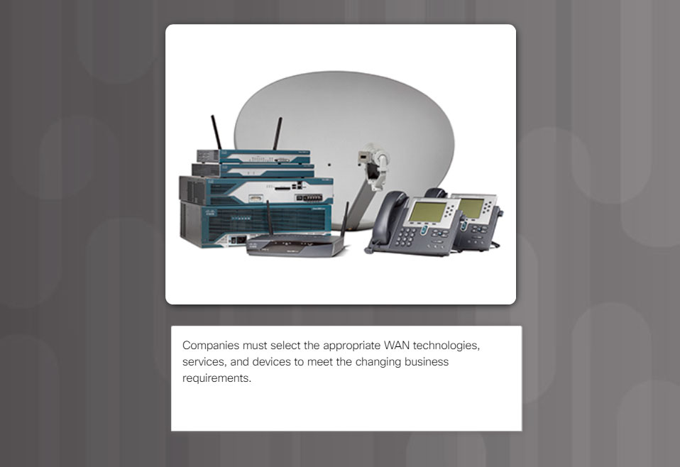

WAN Device Modules
Your medium-sized company is upgrading its network. To make the most of the equipment currently in use, you decide to purchase WAN modules instead of new equipment.
All branch offices use either Cisco 1900 or 2911 series ISRs. You will be updating these routers in several locations. Each branch has its own ISP requirements to consider.
To update the devices, focus on the following WAN modules access types: